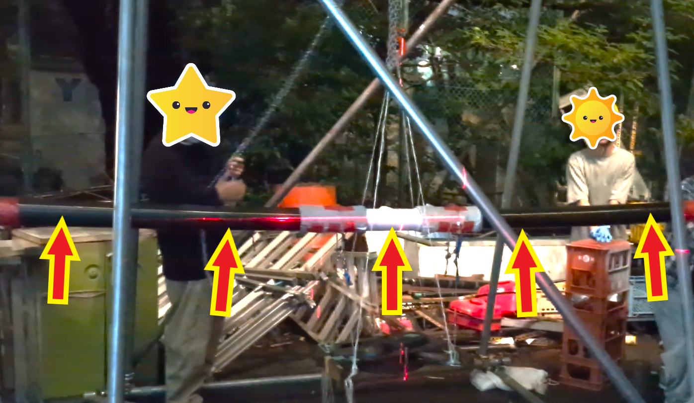
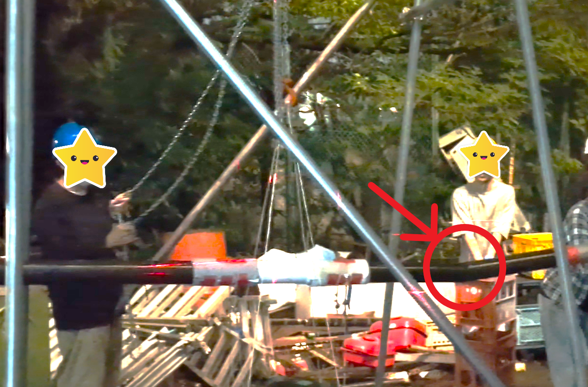
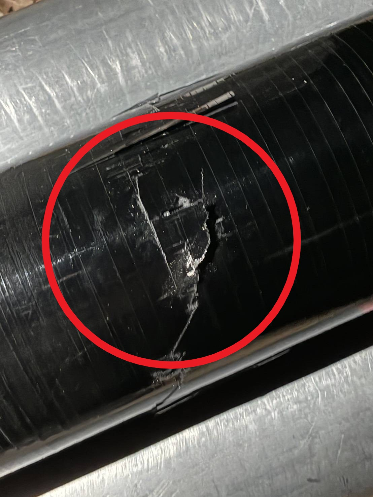

２７代翼桁破壊試験レポート
翼破壊試験とは
幣サークルでは機体の翼を支えるカーボンフレーム（翼桁）を手作業で製作しています。そのため、自分たちの作成した翼桁に十分な強度があるかテストする必要はあります。そこで行うのが翼破壊試験です。この試験では作成した翼桁に荷重を与え破壊することで、その強度が十分であるか確認をします。

破壊試験の内容
翼桁を破壊するために荷重を加えていきました。下の写真は翼桁が破壊される直前のものです。だいぶたわんでいますね！
余談ですが「メシメシ」という音がめっちゃ鳴ってて怖かったです( ﾟДﾟ)

その後40Kg程度の荷重を載せた時点で、翼桁が大きな音を立てて割れてしまいました。

翼桁の割れた個所はこんな感じです！見事にひび割れていますね！

さいごに
今回の試験では、荷重が目標値に達する前に桁が破壊されてしまいました。また、桁のたわみ量も目標よりかなり大きかったです。翼桁の性能が目標より低くなってしまった原因としては、桁内部での気泡が考えられます。
今後はさらに原因を究明し改善した上で再度破壊試験に取り組んでいきます！
ここまで読んでいただきありがとうございました。
横浜AEROSPACE 27代構造設計 山鹿